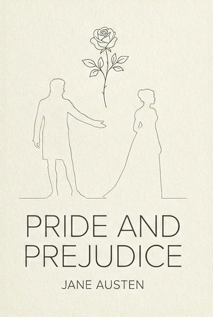
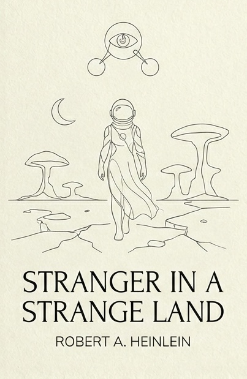

books I loved
Check out my Goodreads profile for the full reading list. Tap a book to read my thoughts.

I relate a lot to Mr Darcy — well-intentioned, caring, wholesome, yet sometimes rubs people the wrong way because he prefers to be genuine. Just like me, really. And I thought Elizabeth was hot — spirited, idealistic, and determined to be the change she wanted to see. I'm really glad it worked out for them. Yes I'm a sap. XD

Valentine Michael Smith is so endearing to me. He's earnest and straightforward — no artifice, what he says is what he means. He has this childlike innocence that I appreciate and aspire to. I also really admired how he had this vision of a better Earth culture and worked tirelessly to build that version of utopia.